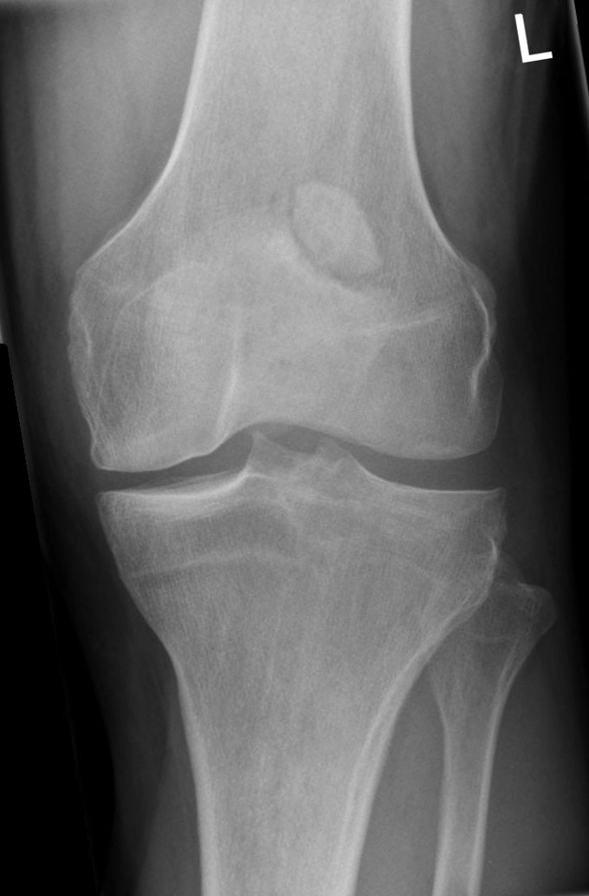

310 — Xương phụ & điểm cốt hóa: đừng gọi là gãy / Accessory ossicles
Tags: pattern:xuong-phu vung:co-xuong-khop anatomy:co-xuong-khop
Mức chắc chắn (certainty): tổng hợp y văn (literature synthesis) — nhóm tự biên từ y văn mở, chưa gắn ca nguyên văn đơn lẻ.
1. Tổng quan — vỏ xương kín chu vi là ranh giới sống còn
- Xương phụ (accessory ossicle) / xương vừng (sesamoid) là điểm cốt hóa thứ phát không liền vào xương chính — TẠI SAO có vỏ xương (cortex) bao kín toàn bộ chu vi + bờ nhẵn tròn + thường đối xứng 2 bên: nó phát triển như một xương con độc lập từ trung tâm cốt hóa riêng.
- Mảnh gãy đứt điểm bám (avulsion) ngược lại: bờ sắc nhọn không vỏ ở mặt gãy (uncorticated jagged margin) + khớp vừa khít vào giường xương khuyết (donor site) + sưng nề mô mềm khu trú — TẠI SAO: mặt gãy là xương xốp (trabecular) lộ ra, chưa kịp tạo vỏ.
2. Gamut xương nhỏ cạnh khớp (Gamut)
- Góc trên-ngoài bánh chè + bờ viền đặc nhẵn: bánh chè hai mảnh (bipartite patella) — bỏ qua.
- Sau xương sên + cổ chân đau sau: os trigonum — phân biệt gãy mỏm sau Shepherd.
- Cạnh nền xương bàn V: os peroneum / vesalianum — phân biệt gãy Jones + gãy đứt gân mác ngắn.
- Bờ sắc + donor site + sưng nề: gãy đứt thật — bó bột/mổ theo di lệch.
3. Bảng so sánh phân biệt (ma trận đối chiếu)
| Thực thể (entity) | Hình ảnh điển hình | Chốt vào (rule-in) | Chốt loại (rule-out) | Gợi ý xác nhận |
|---|---|---|---|---|
| Bipartite patella | Mảnh góc trên-ngoài + viền đặc nhẵn + đối xứng | Superolateral + vỏ kín + không sưng nề | Đường sáng cực dưới/ngang giữa → gãy | Chụp đối bên + CT khi nghi ngờ |
| Os trigonum | Xương tròn sau sên + khe đều + vỏ kín | Tròn nhẵn + đau kẹt sau mạn | Sắc nhọn + chấn thương cấp → gãy Shepherd | CT + MRI phù tủy |
| Os peroneum/vesalianum | Hạt cạnh nền bàn V + vỏ kín | Tròn + không donor site | Bờ sắc + hở nền bàn V → gãy Jones | Chụp chéo + hỏi gân mác |
| Gãy đứt (avulsion) | Bờ sắc không vỏ + donor site + sưng nề | Khớp vừa giường khuyết + chấn thương | Vỏ kín toàn chu vi → xương phụ | Bó bột/mổ theo mm di lệch |

Mảnh phụ góc trên-ngoài, bờ viền đặc nhẵn, không sưng nề. Nguồn: Hellerhoff, Wikimedia Commons, CC BY-SA 3.0.4. Protocol
- X-quang 2 bình diện + chụp đối bên so sánh: vỏ kín + đối xứng = xương phụ; CT khi còn nghi ngờ (vỏ mặt gãy).
- Bánh chè: đường sáng cực dưới/ngang giữa + ngã đập gối = gãy thật (mổ khi di lệch > 2–3 mm + mất duỗi).
flowchart TD
A[Mảnh xương nhỏ cạnh khớp] --> B{Vỏ kín toàn chu vi?}
B -->|Có + đối xứng| C[Xương phụ: bỏ qua]
B -->|Không + donor site| D[Gãy đứt: bó/mổ]
5. Cạm bẫy
- Bipartite cực dưới không tồn tại — đường sáng cực dưới luôn là gãy (đừng gọi 2 mảnh).
- Os trigonum đau (kẹt sau) tưởng gãy cũ — phù tủy MRI + chích thử mới mổ cắt.
- Gãy Jones vùng watershed liền xấu — phân biệt vesalianum để khỏi mổ oan/mổ thiếu.
6. Tự lượng giá — Blind Quiz
Ca 1 — Đau gối trước sau ngã, X-quang có mảnh trên-ngoài bánh chè. Đọc phim.
- Hỏi: mảnh ở đâu? Vỏ kín hay sắc nhọn? Gãy hay xương phụ?
Bấm để hiện đáp án
- Dấu hiệu (findings): mảnh góc trên-ngoài (superolateral) + bờ viền đặc nhẵn + không sưng nề mô mềm.
- Chẩn đoán (diagnosis): bánh chè hai mảnh (bipartite patella) — vỏ kín + vị trí kinh điển (khác gãy cực dưới/ngang giữa).
- Nguồn: Hellerhoff, CC BY-SA 3.0.
Ca 2 — Sưng đau cạnh nền bàn V sau lật cổ chân, mảnh bờ sắc khớp vừa giường khuyết: xương phụ hay gãy Jones? (Bảng mục 3.)
Bấm để hiện đáp án
- Gãy Jones/đứt gân mác ngắn: bờ sắc + donor site + sưng nề — bó bột/mổ (khác vesalianum vỏ kín).
Ca 3 — Đau sau cổ chân mạn ở vũ công ballet, xương tròn sau sên vỏ kín + phù nhẹ: os trigonum hay gãy Shepherd? (Bảng mục 3.)
Bấm để hiện đáp án
- Os trigonum có triệu chứng (kẹt sau): tròn vỏ kín + mạn — vật lý trị liệu/chích (gãy Shepherd là sắc + chấn thương cấp).
Bài liên quan chéo
- 300 – Tổng quan MSK
- 320 – Gãy & trật khớp (gãy thật)
- 355 – Cổ tay (gãy xương thuyền, dự kiến viết sau)
Không dùng để chẩn đoán độc lập khi chưa có người hướng dẫn.